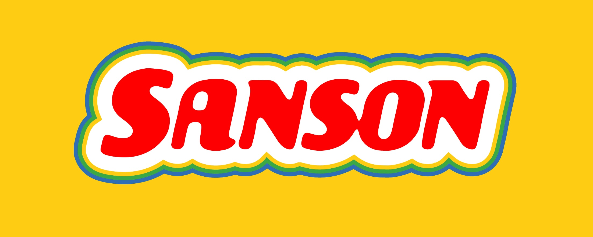
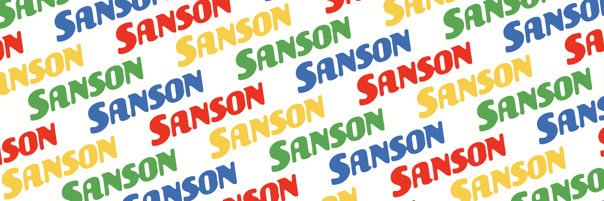
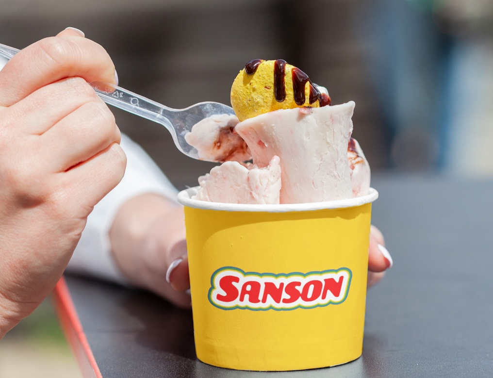
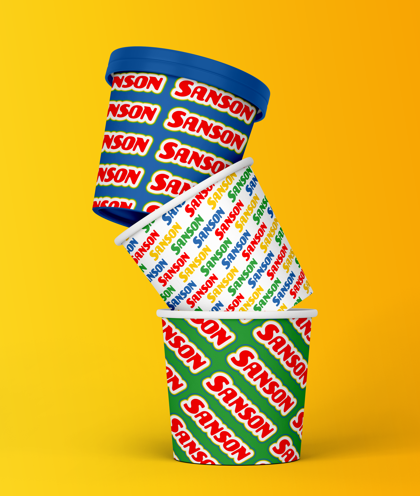
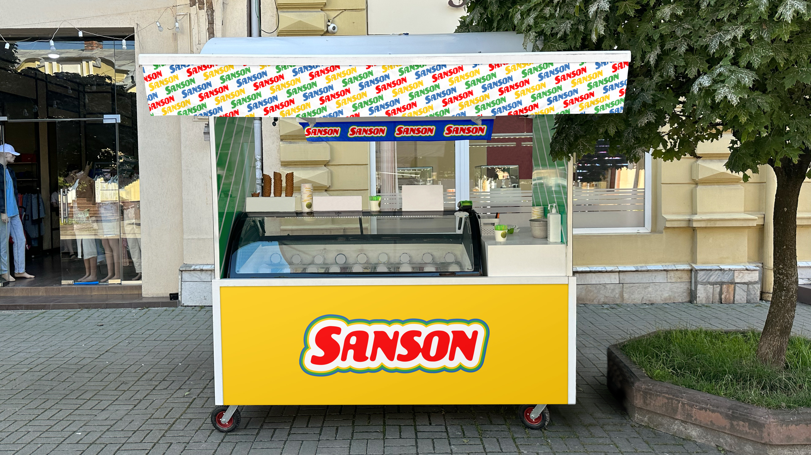
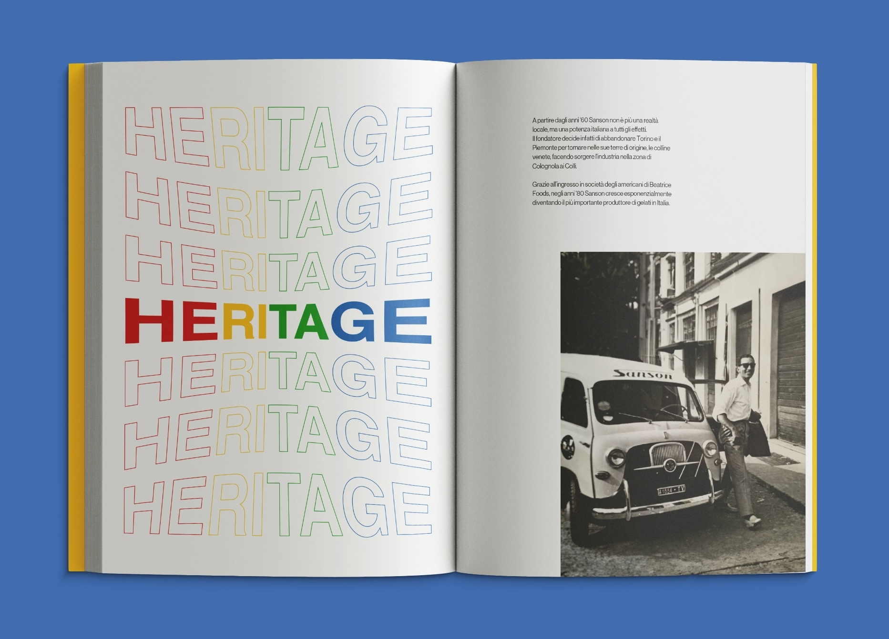
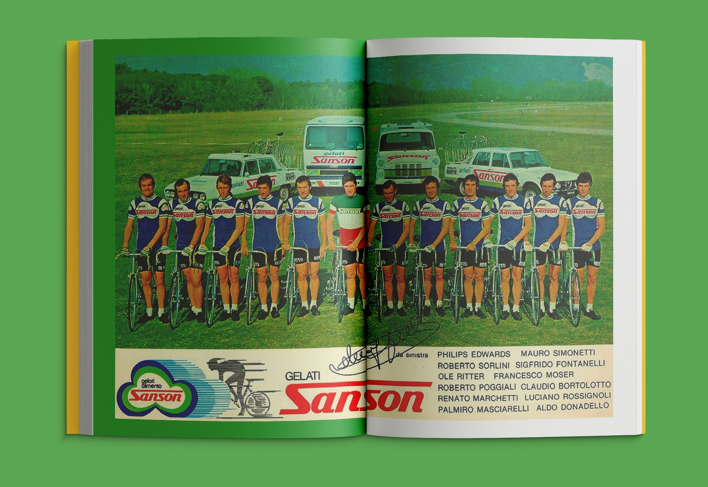

Sanson Ice Creams
Sanson was one of the most important and famous Italian ice cream brands of the last century. Founded in 1940 by Teofilo Sanson, it became one of the most iconic brands of Italian summers before being absorbed by Sammontana and eventually going bankrupt in the early 2000s.
The aim of the project is to revive the brand, giving it new energy through the creation of a refreshed logo and the use of graphic elements.
The work started with an analysis of its history and presence in popular culture, to identify values and distinctive elements. By studying the brand and its core values, we defined the target audience and developed posters and campaigns that communicated the Sanson lifestyle. The research was compiled into a Brand Book and a Brand Reel, showcasing the world in which the brand lived — and continues to live.
Several physical applications were also designed based on the brand’s distinctive elements, aiming to emphasize Sanson’s playful and childlike spirit.







Credits: Mariastella Sanguineti, Riccardo Santarelli, Paola Savarese, Camilla Sportoletti, Andrea Vettorazzo.